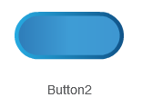
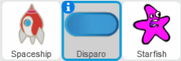
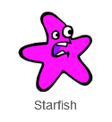
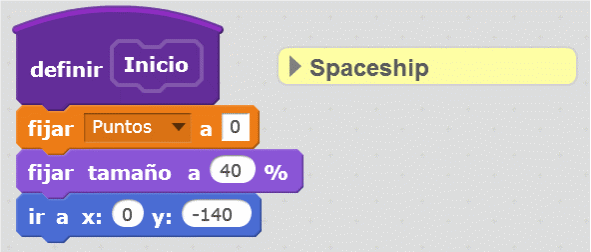
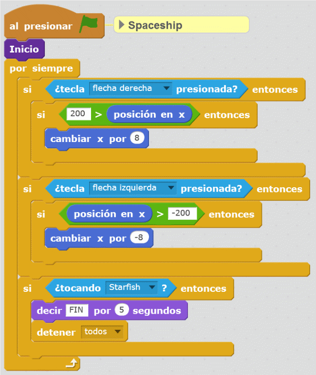
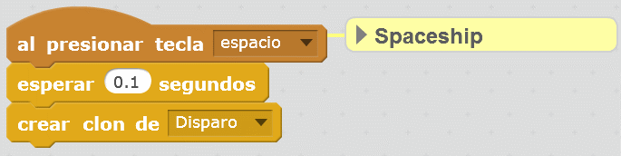
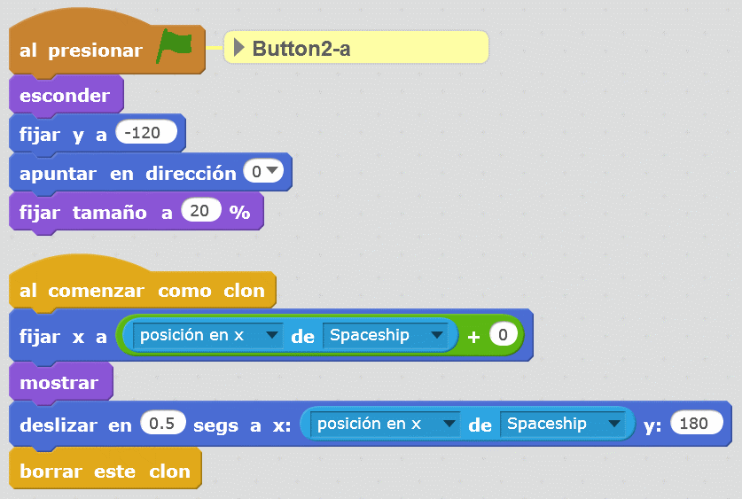
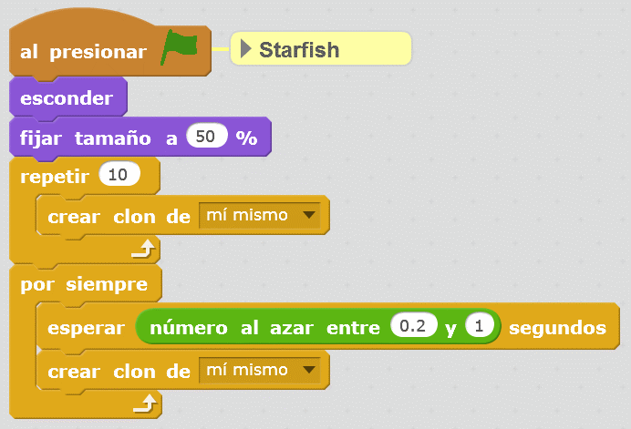

5. Matar marcianitos¶

En esta práctica vamos a programar un juego que consiste en matar marcianos que caen desde la parte alta de la pantalla con el láser de una nave espacial.
Iniciamos el editor de Scratch.
Borramos al gato presionando sobre él con el botón derecho del ratón y luego pulsamos borrar.

Cambiaremos el fondo del escenario con estrellas.
Pulsamos el botón de Fondo nuevo.

A continuación pulsamos en Tema Espacio.
Luego seleccionamos el fondo stars.
La pantalla quedará de la siguiente manera.

Añadimos un nuevo personaje, una nave espacial.
Pulsamos el botón de nuevo objeto

A continuación pulsamos en Tema Espacio.
Luego seleccionamos el objeto Spaceship.

Añadimos un nuevo personaje, un botón azul que servirá para hacer los disparos.
Pulsamos el botón de nuevo objeto
A continuación pulsamos en Categoría Cosas.
Luego seleccionamos el objeto Button2.
Ahora, pulsando en el botón i del objeto, cambiamos su nombre a Disparo
Añadimos una estrella de mar, que hará las veces de marciano.
Pulsamos el botón de nuevo objeto
A continuación pulsamos en Categoría Animales.
Luego seleccionamos el objeto Starfish.
Añadimos la variable Puntos, que contará el número de puntos acumulados mientras jugamos.
Dentro de la pestaña Datos
 ,
,pulsamos crear una variable

Cambiamos el nombre de la variable a Puntos

Por último pulsamos el botón OK
Ahora iremos al programa de la nave espacial

y allí creamos el siguiente programa.
Estas instrucciones inician el programa borrando la variable puntos, cambia el tamaño de la nave espacial y la coloca en la parte baja de la pantalla.
Continuamos programando la nave espacial.
Este bloque mueve la nave espacial de izquierda a derecha y finaliza el programa cuando un marciano toque la nave.
Con otra pequeña función, la nave podrá disparar su láser.
Probaremos que todo funciona correctamente presionando la bandera verde y moviendo la nave a izquierda y a derecha con las teclas de cursor.
El láser funcionara más adelante cuando programemos el objeto Disparo.
{kind=link}
{kind=link}
{kind=link}
Disparo láser¶
Ahora iremos al programa del objeto Disparo
y allí programaremos su funcionamiento.
Este programa sitúa el inicio del láser en la parte baja de la pantalla (y = -120),
coloca al botón en posición vertical (dirección 0)
y reduce el tamaño para que el botón azul parezca un disparo (tamaño a 20%)
A continuación, cada clon aparece en la posición actual de la nave espacial y se mueve hacia arriba hasta llegar al final de la pantalla, lugar donde desaparece.
En este punto ya se puede probar el funcionamiento de los disparos con la nave espacial.
{kind=link}
Marcianos¶
Ahora iremos al programa del objeto Starfish

Y vamos a programar el comportamiento de los marcianos al comenzar el programa.
Este programa inicia 10 marcianos en la parte alta de la pantalla y va creando cada cierto tiempo más marcianos.
El programa que maneja cada uno de los marcianos será el siguiente.

Al iniciarse un nuevo marciano, aparece en la parte alta de la pantalla, en una posición aleatoria.
Si un disparo toca a un marciano, este desaparece y el contador de puntos aumenta un punto
Si el marciano toca el borde inferior, esta desaparece y el contador de puntos disminuye 10 puntos.
Cada medio segundo, el marciano baja hacia la parte baja de la pantalla.
Este es el momento de probar todos los programas juntos y jugar un rato a los marcianitos.
{kind=link}
Ejercicios¶
Cambia los parámetros del programa para ajustar su dificultad haciendo que aparezcan más marcianos por segundo y que bajen más rápido.
Añade una función de disparo doble para la nave espacial al pulsar la tecla "flecha arriba"
Añade una barrera que proteja durante un segundo a la nave espacial al pulsar "flecha abajo".
Inventa otra modificación original para el programa.